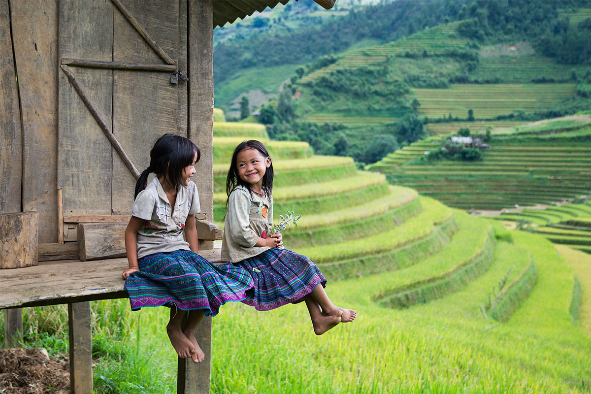
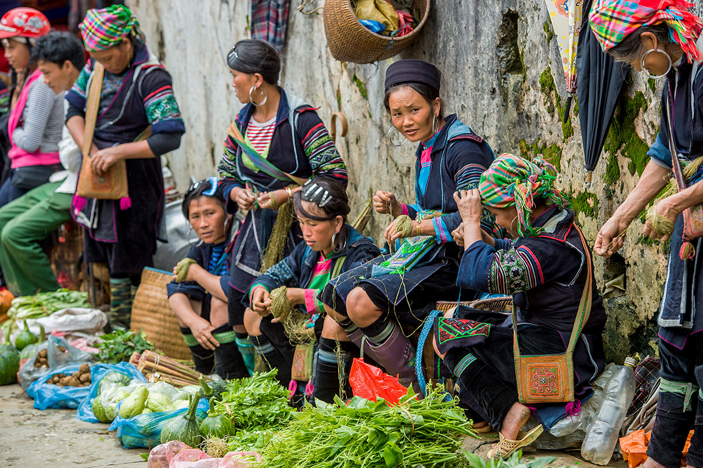
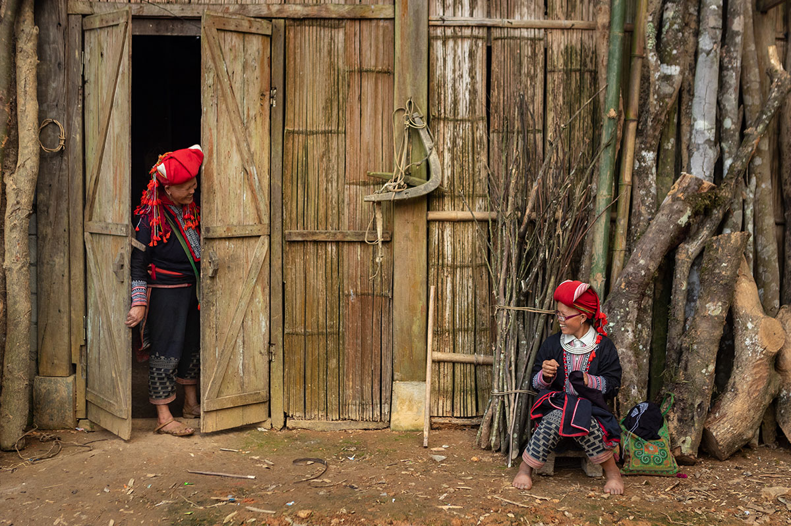
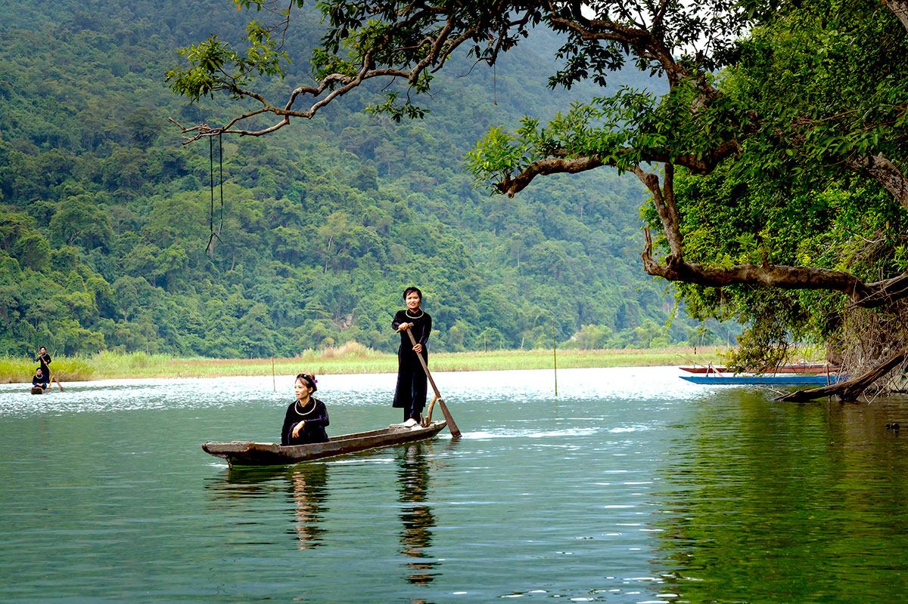
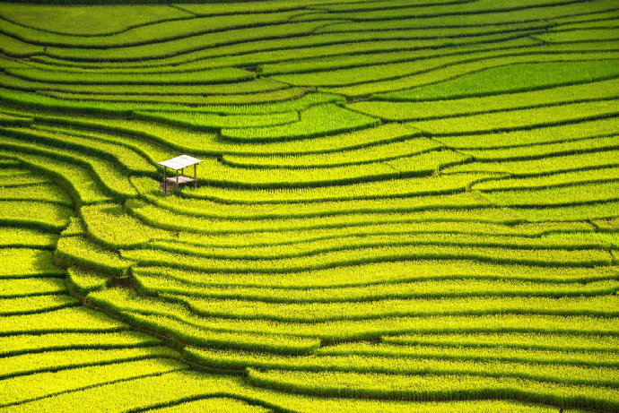
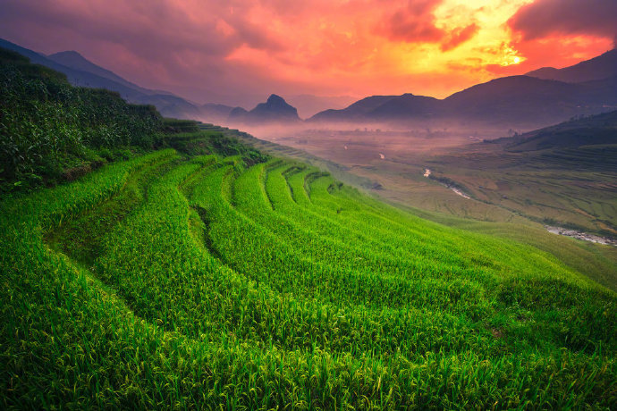
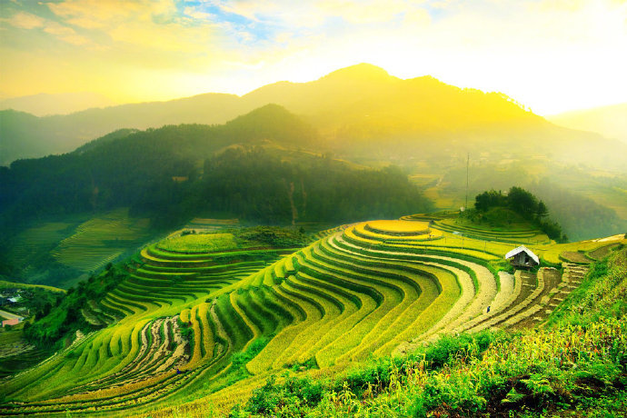
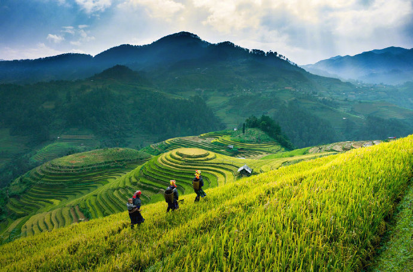
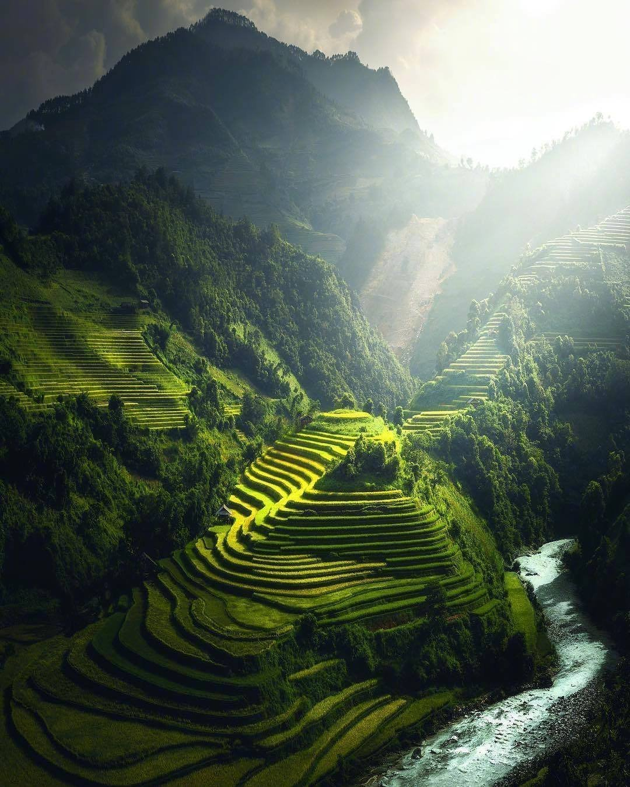
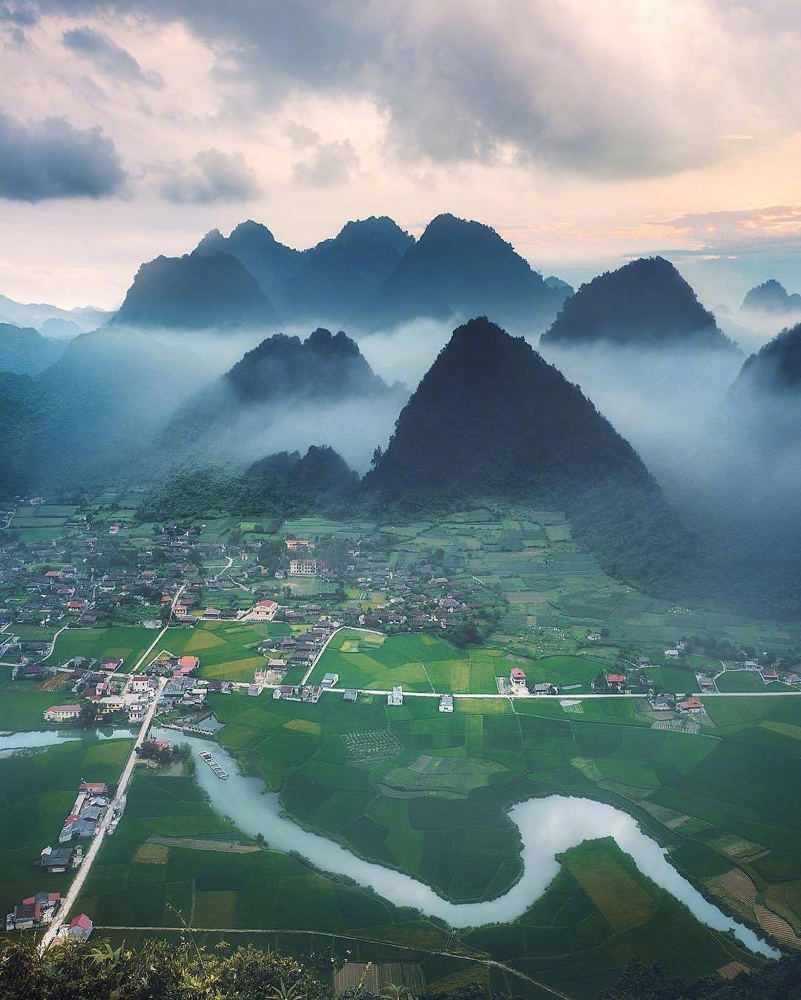

越南北部的山区，一个名为沙巴(Sapa)的城镇，坐落在海拔1650米的黄连山山脉中。在环绕薄雾中梯田和深谷中，有一群身着色彩点缀服装的居民在这生活了数千年。因游客的涌入带来的投资扩张了城镇的部分区域，同时也给当地的传统风俗和居民带来了不少的影响，他们被迫融入了现代社会。欢迎来到这个迷人的少数民族城镇--沙巴。
在越南这个小国家里，竟然有54个民族。其中人口数量最多的是京族(Kinh)，他们占据了全国86%的人口。因为大山环绕和毗邻中国，沙巴(Sapa)是仅有的不以京族为主要人口的的地区，1993年人口统计该地区大约有316452个人，其中苗族(Hmong)占52%，瑶族(Dao)占25%，京族(Kinh)占15%，岱依族(Tày)占5%，热依族(Giáy)占2%，人口最少的4个民族仅占了大约1%的人口，不足500人，岱依族与和中国境内的壮族同源，热依族和中国境内的布依族同源，约3300人居住在城镇，其余的分布在不同的农业地区。我们可以用服饰的颜色和样式来辨别沙巴居民的民族。今天，经常可以看见少数民族在沙巴的市场里出售他们的纺织品，其中一些还出口到外国。
适应力很强的苗族(Hmong)

作为沙巴的主要民族，我们可以很容易找到苗族人。尤其在Cat Cat这个村子，苗族人穿着靛青色的麻制衣服，衣服上面通常绣有装饰性几何图案。在18世纪的动荡时期，因为清朝的政治压迫，苗族人开始从中国迁徙到东南亚。他们逃难的足迹遍及到缅甸，但仍设法保留了他们的传统信仰和习俗。
黑苗人以他们美丽的纺织品和服饰出名，他们的产品是沙巴的特产之一，特别在巴哈(Bac Ha)大市场。1月在Cat Cat村举行的一年一度的Gau Tao节，大家在农闲时节的酒宴上祈求幸福和长寿。这是一个值得一看的传统，幸运的游客会被带到一起参加射箭，赛马，舞蹈等集体娱乐活动。
古老的瑶族(Dao)

瑶族人的深红色的头巾可以区分其与其他民族。瑶族人内部族群也有不同的区别，包括他们使用的银币和小绒球。瑶族起源于中国西南部，和当地的曼族和瑶族同源。瑶族人在清朝经历了一段艰难的时期，他们从12世纪开始迁徙到东南亚，他们的文化，特别是写作体系和宗教，深受中国传统的影响。现代瑶族人已经适应了周围环境，耕种稻田，驯养了牲畜。加入每年1月1-2日Ta Phin在举行的Tet Nhay节，你或许可以得到一双手工制作的织锦鞋。
创新的岱依族(Tày)

岱依族是越南第二大民族，仅次于主族越族(也称京族)，但人口也仅占不到2%，总计170万人。他们主要聚居在Ban Ho村, Nam Sai村, Thanh Pu村这些沙巴(Sapa)南部的地区。岱依族人的传统服饰要比其他少数民族的简单，使用的靛青布料很少或没有图案装饰。但是他们的房子很不简单，为防止野生动物的骚扰，房子通常建在距离地面两米的支柱上。岱依族人经常开放他们的房屋给游客。他们很好客。
神秘的夫拉族(Xá Phó)
夫拉族是越南人口最少的少数民族之一。他们来到巴沙估计是在200到300年前。不同于来自中国的苗族(Hmong)和瑶族(Dao)，夫拉族来自亚洲南部马来西亚和印度尼西亚的岛屿。夫拉族人居住在远离其他民族的My Son村。他们以农业为生，种植如玉米，马铃薯，木薯之类的旱地作物，饲养牛。他们的服饰由深色的靛布青夹克和裙子组成，装饰有刺绣和镶入星星形状的淡红色种子镶板。他们最大的节日是村庄清理节，他们通常在农历新年前后庆祝。
沙巴风景






https://insidevietnam.travel/sapa-vietnam-a-diversity-of-ethnic-minorities/